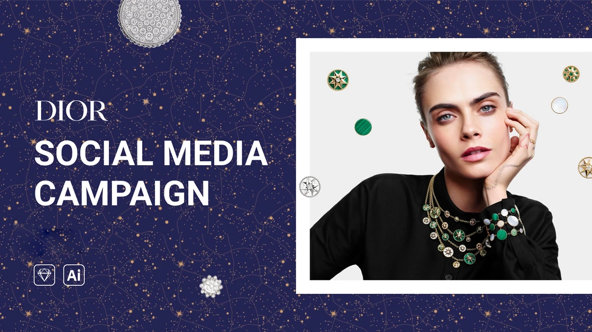
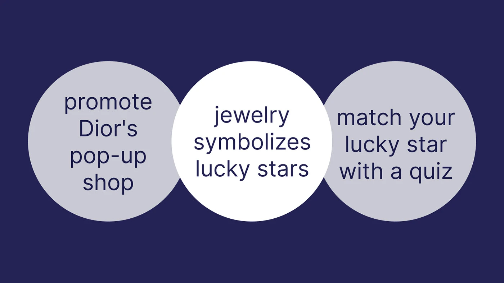
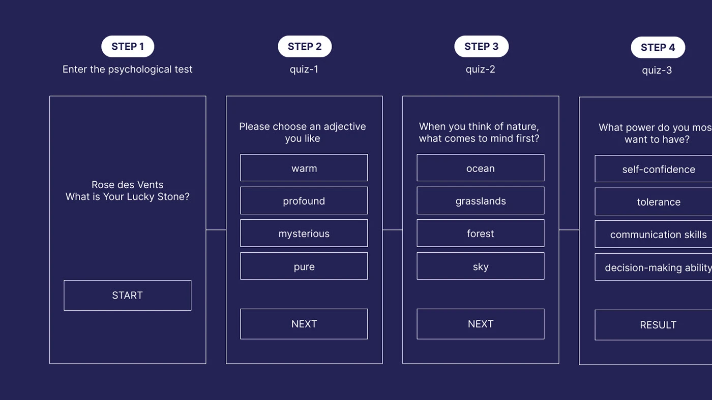
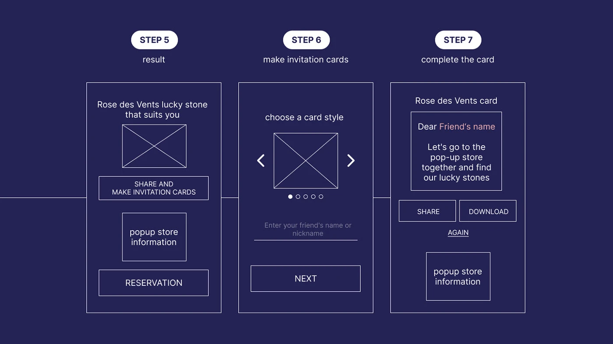
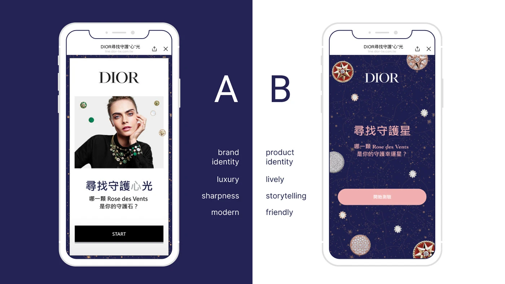
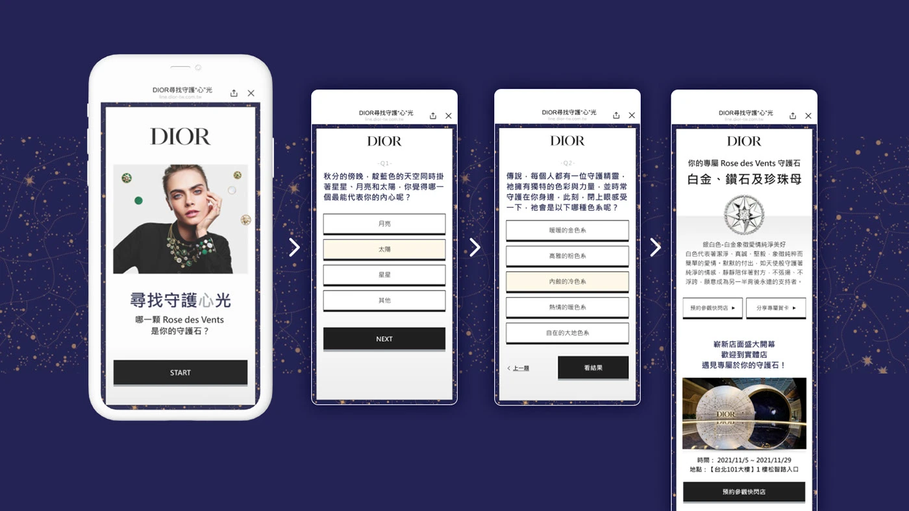
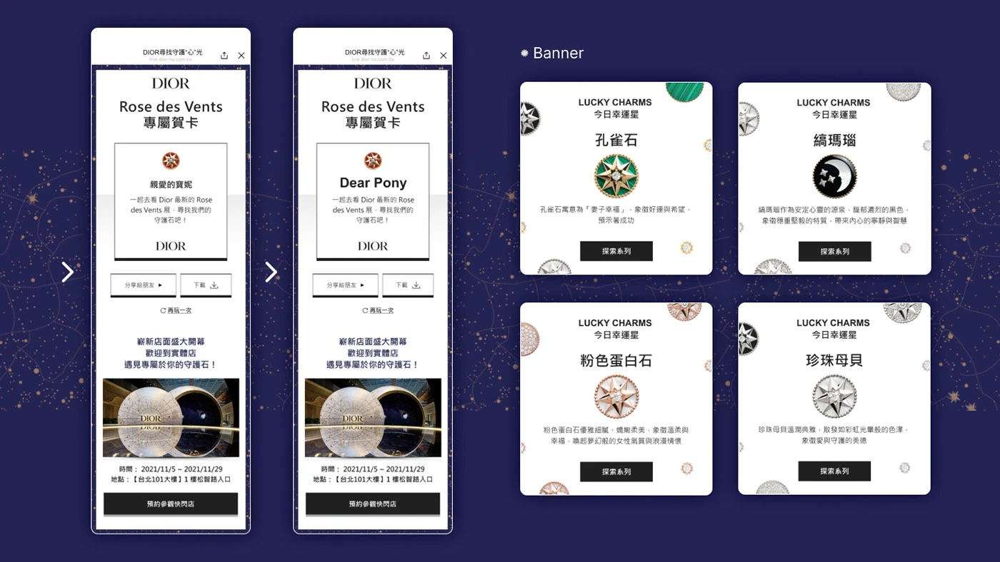

Case Study — 04
An interactive mobile campaign for the limited-time Lucky Dior pop-up — a psychology quiz that guides each visitor to their lucky star among Dior Joaillerie's charms and classic pieces.
01 — Concept
To complement the lucky charms and classic Joaillerie pieces on display at the Lucky Dior pop-up, the campaign translates the in-store experience into a mobile interaction: a short psychology quiz that reveals which lucky star — and which piece — belongs to you. The result turns the brand story into a shareable keepsake.



02 — Execution
Every screen preserves the House's elevated aesthetic — celestial motifs, refined typography, and generous spacing — while remaining thumb-friendly and fast. The result screen delivers a shareable lucky-star card that drives traffic back to the pop-up.


